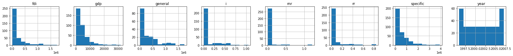

#code adapted from https://github.com/thomasjpfan/ml-workshop-intermediate-1-of-2SimpleImputer
from sklearn.impute import SimpleImputer
import numpy as np
import sklearn
sklearn.set_config(display='diagram')import pandas as pd
url = 'https://raw.githubusercontent.com/davidrkearney/Kearney_Data_Science/master/_notebooks/df_panel_fix.csv'
df = pd.read_csv(url, error_bad_lines=False)
df
import pandas as pd
import sklearn
from sklearn.datasets import fetch_openml
from sklearn.model_selection import train_test_split
df.columns
sklearn.set_config(display='diagram')
X, y = df.drop(['it', 'Unnamed: 0'], axis = 1), df['it']
X = X.select_dtypes(include='number')
X
_ = X.hist(figsize=(30, 15), layout=(5, 8))
df.isnull().sum()Unnamed: 0 0
province 0
specific 4
general 191
year 0
gdp 0
fdi 0
rnr 66
rr 64
i 73
fr 65
reg 0
it 0
dtype: int64Default uses mean
imputer = SimpleImputer()
imputer.fit_transform(X)array([[1.47002000e+05, 3.09127538e+05, 1.99600000e+03, ...,
0.00000000e+00, 0.00000000e+00, 0.00000000e+00],
[1.51981000e+05, 3.09127538e+05, 1.99700000e+03, ...,
0.00000000e+00, 0.00000000e+00, 0.00000000e+00],
[1.74930000e+05, 3.09127538e+05, 1.99800000e+03, ...,
0.00000000e+00, 0.00000000e+00, 0.00000000e+00],
...,
[6.56175000e+05, 3.09127538e+05, 2.00500000e+03, ...,
1.21428571e+00, 3.57142860e-02, 3.57142860e-02],
[1.01730300e+06, 3.94795000e+05, 2.00600000e+03, ...,
1.21428571e+00, 3.57142860e-02, 3.57142860e-02],
[8.44647000e+05, 0.00000000e+00, 2.00700000e+03, ...,
4.76190480e-02, 0.00000000e+00, 0.00000000e+00]])df.isnull().sum()Unnamed: 0 0
province 0
specific 4
general 191
year 0
gdp 0
fdi 0
rnr 66
rr 64
i 73
fr 65
reg 0
it 0
dtype: int64Add indicator!
imputer = SimpleImputer(add_indicator=True)
imputer.fit_transform(X)array([[ 147002. , 309127.53846154, 1996. , ...,
0. , 0. , 0. ],
[ 151981. , 309127.53846154, 1997. , ...,
0. , 0. , 0. ],
[ 174930. , 309127.53846154, 1998. , ...,
0. , 0. , 0. ],
...,
[ 656175. , 309127.53846154, 2005. , ...,
0. , 0. , 0. ],
[1017303. , 394795. , 2006. , ...,
0. , 0. , 0. ],
[ 844647. , 0. , 2007. , ...,
0. , 0. , 0. ]])df.isnull().sum()Unnamed: 0 0
province 0
specific 4
general 191
year 0
gdp 0
fdi 0
rnr 66
rr 64
i 73
fr 65
reg 0
it 0
dtype: int64Other strategies
imputer = SimpleImputer(strategy='median')
imputer.fit_transform(X)array([[1.47002000e+05, 1.53640000e+05, 1.99600000e+03, ...,
0.00000000e+00, 0.00000000e+00, 0.00000000e+00],
[1.51981000e+05, 1.53640000e+05, 1.99700000e+03, ...,
0.00000000e+00, 0.00000000e+00, 0.00000000e+00],
[1.74930000e+05, 1.53640000e+05, 1.99800000e+03, ...,
0.00000000e+00, 0.00000000e+00, 0.00000000e+00],
...,
[6.56175000e+05, 1.53640000e+05, 2.00500000e+03, ...,
1.21428571e+00, 3.57142860e-02, 3.57142860e-02],
[1.01730300e+06, 3.94795000e+05, 2.00600000e+03, ...,
1.21428571e+00, 3.57142860e-02, 3.57142860e-02],
[8.44647000e+05, 0.00000000e+00, 2.00700000e+03, ...,
4.76190480e-02, 0.00000000e+00, 0.00000000e+00]])imputer = SimpleImputer(strategy='most_frequent')
imputer.fit_transform(X)array([[1.47002000e+05, 0.00000000e+00, 1.99600000e+03, ...,
0.00000000e+00, 0.00000000e+00, 0.00000000e+00],
[1.51981000e+05, 0.00000000e+00, 1.99700000e+03, ...,
0.00000000e+00, 0.00000000e+00, 0.00000000e+00],
[1.74930000e+05, 0.00000000e+00, 1.99800000e+03, ...,
0.00000000e+00, 0.00000000e+00, 0.00000000e+00],
...,
[6.56175000e+05, 0.00000000e+00, 2.00500000e+03, ...,
1.21428571e+00, 3.57142860e-02, 3.57142860e-02],
[1.01730300e+06, 3.94795000e+05, 2.00600000e+03, ...,
1.21428571e+00, 3.57142860e-02, 3.57142860e-02],
[8.44647000e+05, 0.00000000e+00, 2.00700000e+03, ...,
4.76190480e-02, 0.00000000e+00, 0.00000000e+00]])Categorical data
import pandas as pdimputer = SimpleImputer(strategy='constant', fill_value='sk_missing')
imputer.fit_transform(df)array([[0, 'Anhui', 147002.0, ..., '1128873', 'East China', 631930],
[1, 'Anhui', 151981.0, ..., '1356287', 'East China', 657860],
[2, 'Anhui', 174930.0, ..., '1518236', 'East China', 889463],
...,
[357, 'Zhejiang', 656175.0, ..., 'sk_missing', 'East China',
2370200],
[358, 'Zhejiang', 1017303.0, ..., '11537149', 'East China',
2553268],
[359, 'Zhejiang', 844647.0, ..., '16494981', 'East China',
2939778]], dtype=object)pandas categorical
df['a'] = df['a'].astype('category')df| Unnamed: 0 | province | specific | general | year | gdp | fdi | rnr | rr | i | fr | reg | it | |
|---|---|---|---|---|---|---|---|---|---|---|---|---|---|
| 0 | 0 | Anhui | 147002.0 | NaN | 1996 | 2093.30 | 50661 | 0.000000 | 0.000000 | 0.000000 | 1128873 | East China | 631930 |
| 1 | 1 | Anhui | 151981.0 | NaN | 1997 | 2347.32 | 43443 | 0.000000 | 0.000000 | 0.000000 | 1356287 | East China | 657860 |
| 2 | 2 | Anhui | 174930.0 | NaN | 1998 | 2542.96 | 27673 | 0.000000 | 0.000000 | 0.000000 | 1518236 | East China | 889463 |
| 3 | 3 | Anhui | 285324.0 | NaN | 1999 | 2712.34 | 26131 | NaN | NaN | NaN | 1646891 | East China | 1227364 |
| 4 | 4 | Anhui | 195580.0 | 32100.0 | 2000 | 2902.09 | 31847 | 0.000000 | 0.000000 | 0.000000 | 1601508 | East China | 1499110 |
| ... | ... | ... | ... | ... | ... | ... | ... | ... | ... | ... | ... | ... | ... |
| 355 | 355 | Zhejiang | 391292.0 | 260313.0 | 2003 | 9705.02 | 498055 | 1.214286 | 0.035714 | 0.035714 | 6217715 | East China | 2261631 |
| 356 | 356 | Zhejiang | 656175.0 | 276652.0 | 2004 | 11648.70 | 668128 | 1.214286 | 0.035714 | 0.035714 | NaN | East China | 3162299 |
| 357 | 357 | Zhejiang | 656175.0 | NaN | 2005 | 13417.68 | 772000 | 1.214286 | 0.035714 | 0.035714 | NaN | East China | 2370200 |
| 358 | 358 | Zhejiang | 1017303.0 | 394795.0 | 2006 | 15718.47 | 888935 | 1.214286 | 0.035714 | 0.035714 | 11537149 | East China | 2553268 |
| 359 | 359 | Zhejiang | 844647.0 | 0.0 | 2007 | 18753.73 | 1036576 | 0.047619 | 0.000000 | 0.000000 | 16494981 | East China | 2939778 |
360 rows × 13 columns
df.dtypesUnnamed: 0 int64
province object
specific float64
general float64
year int64
gdp float64
fdi int64
rnr float64
rr float64
i float64
fr object
reg object
it int64
dtype: objectimputer.fit_transform(df)array([[0, 'Anhui', 147002.0, ..., '1128873', 'East China', 631930],
[1, 'Anhui', 151981.0, ..., '1356287', 'East China', 657860],
[2, 'Anhui', 174930.0, ..., '1518236', 'East China', 889463],
...,
[357, 'Zhejiang', 656175.0, ..., 'sk_missing', 'East China',
2370200],
[358, 'Zhejiang', 1017303.0, ..., '11537149', 'East China',
2553268],
[359, 'Zhejiang', 844647.0, ..., '16494981', 'East China',
2939778]], dtype=object)# %load solutions/03-ex01-solutions.py
from sklearn.datasets import fetch_openml
cancer = fetch_openml(data_id=15, as_frame=True)
X, y = cancer.data, cancer.target
X.shape
X.isna().sum()
imputer = SimpleImputer(add_indicator=True)
X_imputed = imputer.fit_transform(X)
X_imputed.shape
from sklearn.linear_model import LogisticRegression
from sklearn.preprocessing import StandardScaler
from sklearn.pipeline import make_pipeline
from sklearn.model_selection import train_test_split
X_train, X_test, y_train, y_test = train_test_split(
X, y, random_state=42, stratify=y
)
log_reg = make_pipeline(
SimpleImputer(add_indicator=True),
StandardScaler(),
LogisticRegression(random_state=0)
)
log_reg.fit(X_train, y_train)
log_reg.score(X_test, y_test)0.96HistGradientBoosting Native support for missing values
from sklearn.experimental import enable_hist_gradient_boosting
from sklearn.ensemble import HistGradientBoostingClassifierhist = HistGradientBoostingClassifier(random_state=42)
hist.fit(X_train, y_train)HistGradientBoostingClassifier(random_state=42)
hist.score(X_test, y_test)0.9485714285714286Grid searching the imputer
from sklearn.model_selection import GridSearchCV
from sklearn.pipeline import Pipeline
from sklearn.ensemble import RandomForestClassifieriris = pd.read_csv('data/iris_w_missing.csv')iris.head()| sepal length (cm) | sepal width (cm) | petal length (cm) | petal width (cm) | target | |
|---|---|---|---|---|---|
| 0 | 6.4 | 2.9 | 4.3 | 1.3 | 1 |
| 1 | 5.7 | 2.8 | 4.1 | 1.3 | 1 |
| 2 | 6.8 | 2.8 | NaN | 1.4 | 1 |
| 3 | 6.7 | 3.3 | 5.7 | 2.1 | 2 |
| 4 | 4.8 | 3.4 | 1.6 | 0.2 | 0 |
X = iris.drop('target', axis='columns')
y = iris['target']X_train, X_test, y_train, y_test = train_test_split(
X, y, random_state=0, stratify=y
)pipe = Pipeline([
('imputer', SimpleImputer(add_indicator=True)),
('rf', RandomForestClassifier(random_state=42))
])scikit-learn uses get_params to find names
pipe.get_params(){'memory': None,
'steps': [('imputer', SimpleImputer(add_indicator=True)),
('rf', RandomForestClassifier(random_state=42))],
'verbose': False,
'imputer': SimpleImputer(add_indicator=True),
'rf': RandomForestClassifier(random_state=42),
'imputer__add_indicator': True,
'imputer__copy': True,
'imputer__fill_value': None,
'imputer__missing_values': nan,
'imputer__strategy': 'mean',
'imputer__verbose': 0,
'rf__bootstrap': True,
'rf__ccp_alpha': 0.0,
'rf__class_weight': None,
'rf__criterion': 'gini',
'rf__max_depth': None,
'rf__max_features': 'auto',
'rf__max_leaf_nodes': None,
'rf__max_samples': None,
'rf__min_impurity_decrease': 0.0,
'rf__min_impurity_split': None,
'rf__min_samples_leaf': 1,
'rf__min_samples_split': 2,
'rf__min_weight_fraction_leaf': 0.0,
'rf__n_estimators': 100,
'rf__n_jobs': None,
'rf__oob_score': False,
'rf__random_state': 42,
'rf__verbose': 0,
'rf__warm_start': False}Is it better to add the indicator?
from sklearn.model_selection import GridSearchCV
params = {
'imputer__add_indicator': [True, False]
}
grid_search = GridSearchCV(pipe, param_grid=params, verbose=1)grid_search.fit(X_train, y_train)Fitting 5 folds for each of 2 candidates, totalling 10 fits[Parallel(n_jobs=1)]: Using backend SequentialBackend with 1 concurrent workers.
[Parallel(n_jobs=1)]: Done 10 out of 10 | elapsed: 1.2s finishedGridSearchCV(estimator=Pipeline(steps=[('imputer',
SimpleImputer(add_indicator=True)),
('rf',
RandomForestClassifier(random_state=42))]),
param_grid={'imputer__add_indicator': [True, False]}, verbose=1)SimpleImputer(add_indicator=True)
RandomForestClassifier(random_state=42)
grid_search.best_params_{'imputer__add_indicator': True}grid_search.best_score_0.8837944664031621grid_search.score(X_test, y_test)0.9473684210526315Compare to make_pipeline
from sklearn.pipeline import make_pipeline
pipe2 = make_pipeline(SimpleImputer(add_indicator=True),
RandomForestClassifier(random_state=42))pipe2.get_params(){'memory': None,
'steps': [('simpleimputer', SimpleImputer(add_indicator=True)),
('randomforestclassifier', RandomForestClassifier(random_state=42))],
'verbose': False,
'simpleimputer': SimpleImputer(add_indicator=True),
'randomforestclassifier': RandomForestClassifier(random_state=42),
'simpleimputer__add_indicator': True,
'simpleimputer__copy': True,
'simpleimputer__fill_value': None,
'simpleimputer__missing_values': nan,
'simpleimputer__strategy': 'mean',
'simpleimputer__verbose': 0,
'randomforestclassifier__bootstrap': True,
'randomforestclassifier__ccp_alpha': 0.0,
'randomforestclassifier__class_weight': None,
'randomforestclassifier__criterion': 'gini',
'randomforestclassifier__max_depth': None,
'randomforestclassifier__max_features': 'auto',
'randomforestclassifier__max_leaf_nodes': None,
'randomforestclassifier__max_samples': None,
'randomforestclassifier__min_impurity_decrease': 0.0,
'randomforestclassifier__min_impurity_split': None,
'randomforestclassifier__min_samples_leaf': 1,
'randomforestclassifier__min_samples_split': 2,
'randomforestclassifier__min_weight_fraction_leaf': 0.0,
'randomforestclassifier__n_estimators': 100,
'randomforestclassifier__n_jobs': None,
'randomforestclassifier__oob_score': False,
'randomforestclassifier__random_state': 42,
'randomforestclassifier__verbose': 0,
'randomforestclassifier__warm_start': False}Which imputer to use?
from sklearn.impute import KNNImputer
from sklearn.ensemble import RandomForestClassifier
from sklearn.ensemble import RandomForestRegressor
from sklearn.experimental import enable_iterative_imputer
from sklearn.impute import IterativeImputer
params = {
'imputer': [
SimpleImputer(strategy='median', add_indicator=True),
SimpleImputer(strategy='mean', add_indicator=True),
KNNImputer(add_indicator=True),
IterativeImputer(estimator=RandomForestRegressor(random_state=42),
random_state=42, add_indicator=True)]
}
search_cv = GridSearchCV(pipe, param_grid=params, verbose=1, n_jobs=-1)search_cv.fit(X_train, y_train)Fitting 5 folds for each of 4 candidates, totalling 20 fits[Parallel(n_jobs=-1)]: Using backend LokyBackend with 8 concurrent workers.
[Parallel(n_jobs=-1)]: Done 20 out of 20 | elapsed: 7.8s finishedGridSearchCV(estimator=Pipeline(steps=[('imputer',
SimpleImputer(add_indicator=True)),
('rf',
RandomForestClassifier(random_state=42))]),
n_jobs=-1,
param_grid={'imputer': [SimpleImputer(add_indicator=True,
strategy='median'),
SimpleImputer(add_indicator=True),
KNNImputer(add_indicator=True),
IterativeImputer(add_indicator=True,
estimator=RandomForestRegressor(random_state=42),
random_state=42)]},
verbose=1)SimpleImputer(add_indicator=True)
RandomForestClassifier(random_state=42)
search_cv.best_params_{'imputer': KNNImputer(add_indicator=True)}search_cv.best_score_0.9102766798418973search_cv.score(X_test, y_test)0.9736842105263158